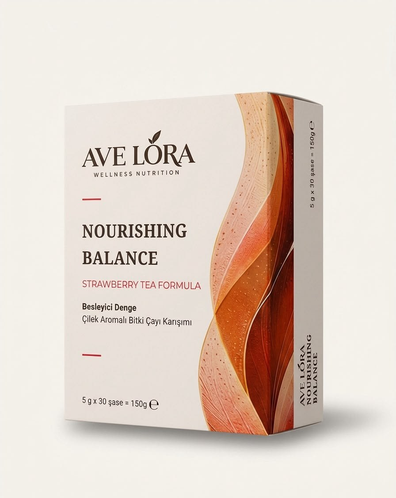

Strawberry Tea Formula
Nourishing Balance
Besleyici Denge · Çilek Aromalı Bitki Çayı Karışımı
Çileğin ferahlatıcı aromasını bitkisel bir karışımla buluşturan Nourishing Balance, gün içinde kendinize ayırdığınız sakin anlar için tasarlandı. Sıcak ya da soğuk hazırlayabileceğiniz hafif ve meyvemsi bir lezzet.
Dengeli beslenme ve aktif yaşamla desteklediğiniz kilo yönetimi sürecinize keyifli bir eşlikçi.
- 30 saşe
- 5 g / saşe
- 150 g net